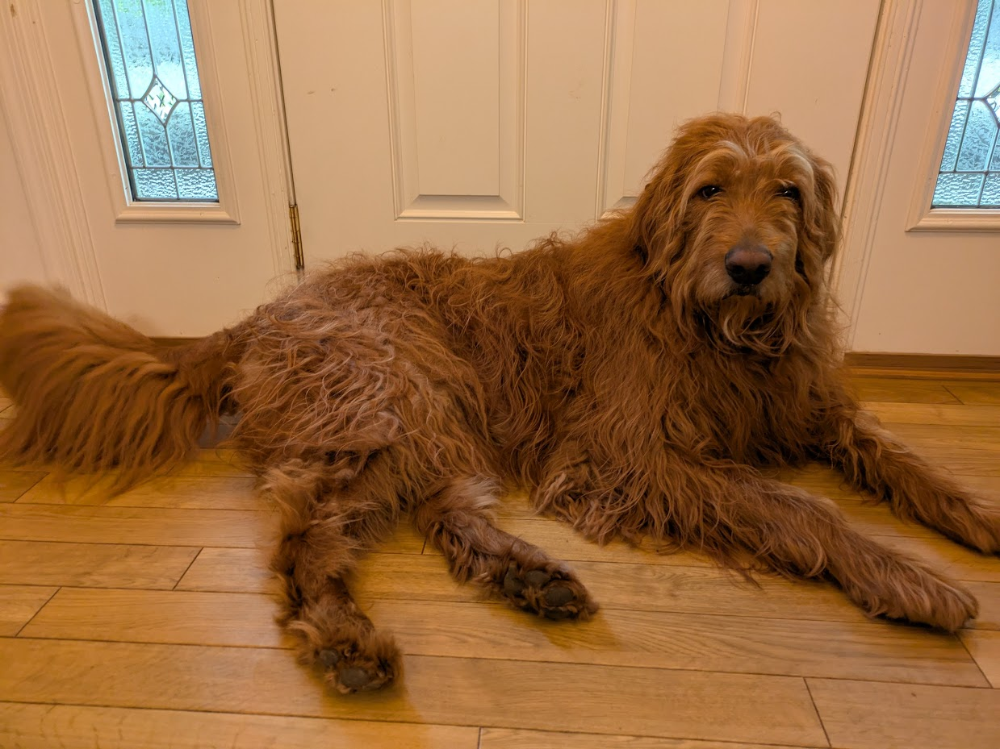
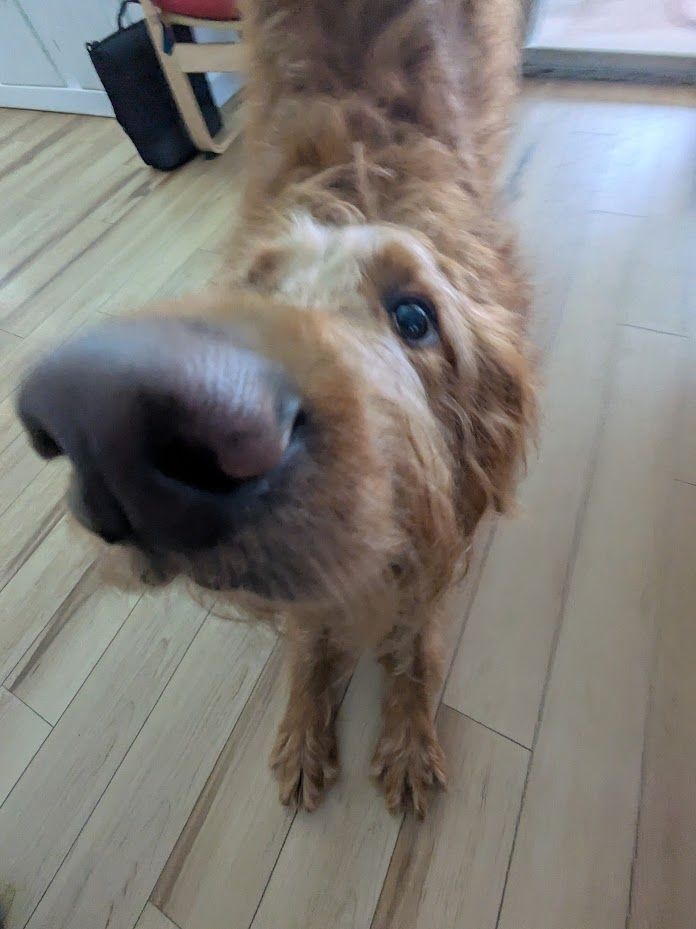
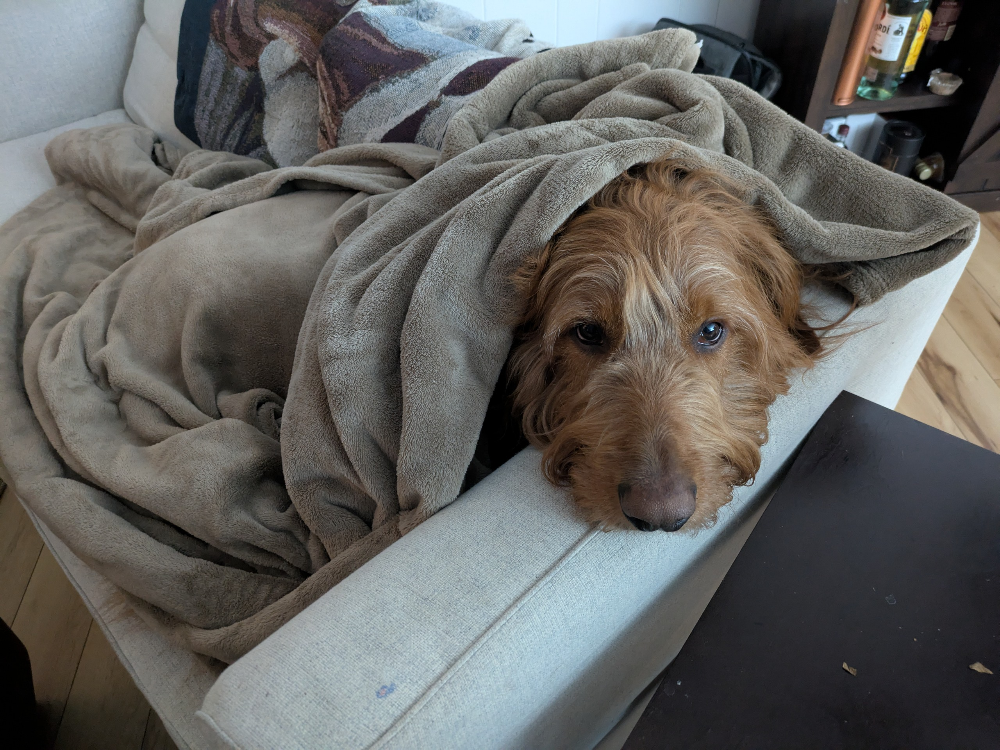
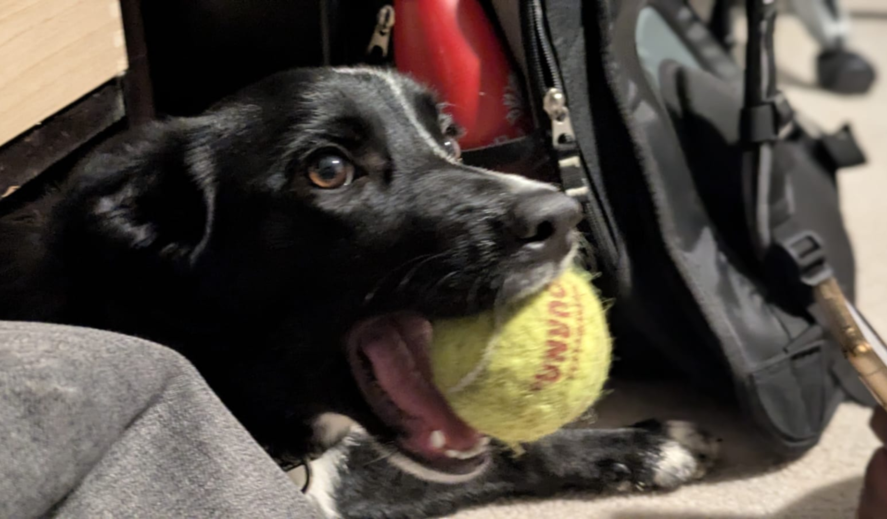
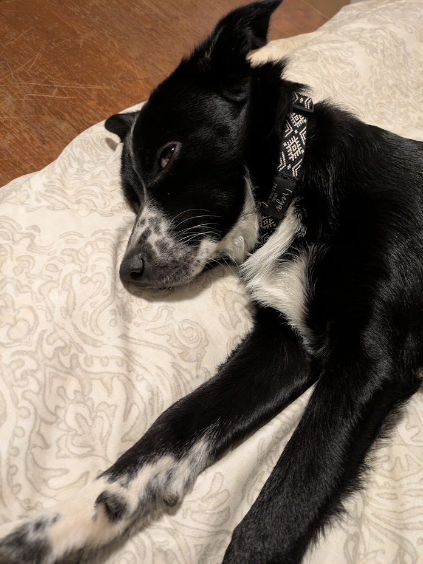
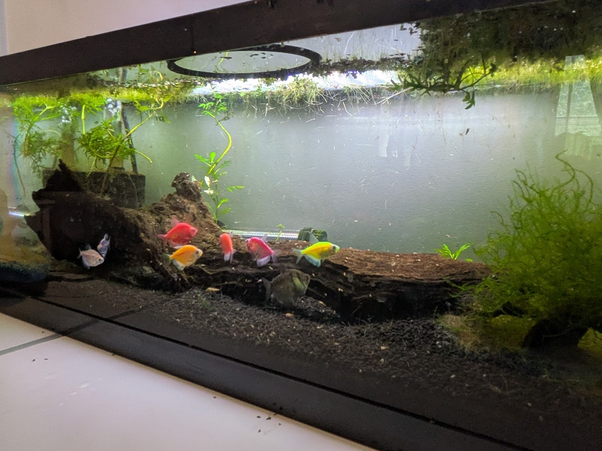
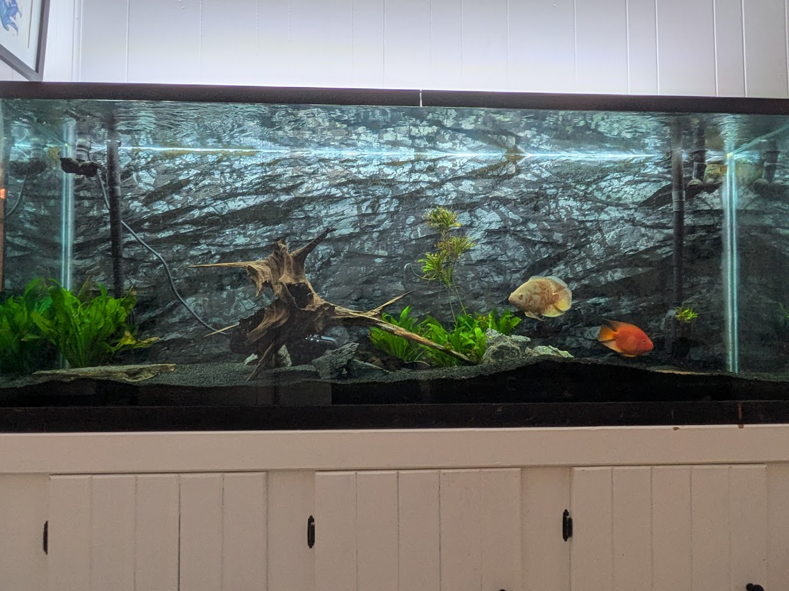
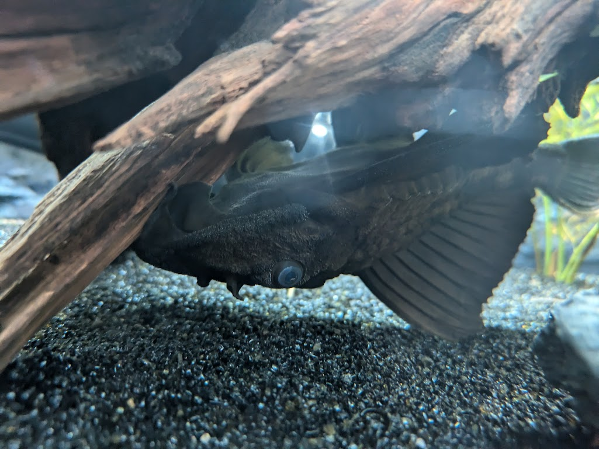

> This is loki the big red softie.
> He is quite the cuddler.
> Here he is playing with his best freind in the world, Fifi.

> Fifi is very chaotic.
> But she tires out pretty quickly when she's playing.
> Now for some fishy fun - here's a nice (albiet pretty messy as of now) shot of my fish tank number 1, complete with a (mostly pictured) school of 8 glow tetras and many, many snails.
> And now for a part of tank number 2, complete with a rhino pleco, an oscar ciclid, and a parrot ciclid:
> The rhino pleco can get a bit silly at times.
